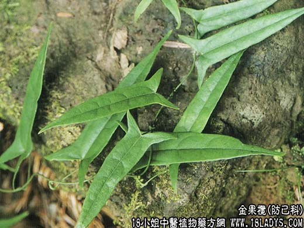

【中药概述】
金果榄为防己科藤本植物青牛胆的块根。苦、微辛，寒。归肺、胃经。
1．清热解毒：用于咽喉肿痛，疮痈肿毒和毒蛇咬伤等证。可单用水煎服，或代茶饮。也可与同类药同用。
2．用于热证的胃脘疼痛、泻痢腹痛和肺热咳嗽等证。可单用，水煎服。
【临证应用】
金果榄5克，装胶囊，每服3粒，日服3次。
【药理作用】
现代用治急、慢性扁桃体炎，急性咽炎，口腔炎，腮腺炎，淋巴结结。外用毒蛇咬伤等。
【化学成分】
含掌叶防己碱、黄酮甙、氨基酸、糖类等。
【用量用法】
9——20g，水煎服，或入剂。或代茶饮。